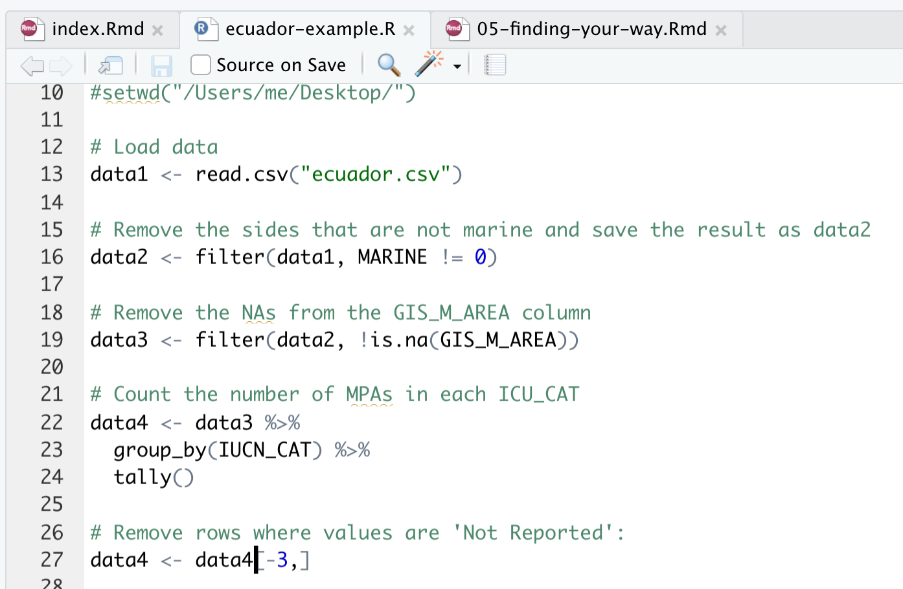

3 <<<<<<< HEAD
Approch 2: base R
data4 <- aggregate(cbind(n = IUCN_CAT) ~ IUCN_CAT,
data = data3,
FUN = function(x){NROW(x)})Both approaches
e31e86f113159ce879830e4261452e0825b3f3ab Let’s query the result in our
Consoleto see that this worked:
data4## IUCN_CAT n
## 1 II 8
## 2 III 4
## 3 Not Reported 8Note that for the original Ecuador data this did not work because all entries in the IUCN_CAT column were Not Reported or Not Applicable (ecuador.csv is a supplemented version of the true Ecuador data with some IUCN_CAT set to II and III). In this example, row 3 is Not Reported. We need to remove this row:
data4 <- data4[-3, ] Note that the minus sign indicates to remove, and now data4 has the Not Reported row (both columns) removed. If you have more than one row to be removed, you would use data4 <- data4[-c(3,4,6),] where you want to remove rows 3, 4, and 6. (Note that the comma is needed outside the round bracket to indicate all columns. The rows are specified by c(3,4,6)).
Here data4 appears on both the left- and righthand size of <-, so the old variable data4 (containing row 3) is overwritten with the new variable data4, which has row 3 removed.
Our data describing the number of areas in each level of protection is now ready as data4, but let’s clean more data to make another graph before moving on to the graphing section. You R Script should now look like this:

(where the top rows of code weren’t able to fit in the screen shot, but they are the same as before)
- Now we would like to calculate the amount of area that is strongly protected.
We can do this by grouping by the IUCN_CAT column of data3, and summing the area GIS_M_AREA for the MPAs within the group. We name the result data5. Run this command in your R Console:
data5 <- data3 %>%
group_by(IUCN_CAT) %>%
summarise(AREA_SUM = sum(GIS_M_AREA))